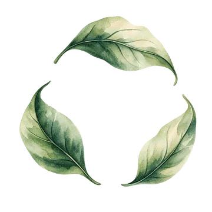

人員名單管理
這裡管理誰可以登入入口網站、是什麼身份。同仁忘記通行碼時，按該員的「看通行碼」查看（20 秒後自動隱藏，每次查看都會留下紀錄）；要換通行碼請按「編輯」直接設定新的 6 位數字。停用或改身份後，最多 5 分鐘內各系統生效。

載入中…
這裡管理誰可以登入入口網站、是什麼身份。同仁忘記通行碼時，按該員的「看通行碼」查看（20 秒後自動隱藏，每次查看都會留下紀錄）；要換通行碼請按「編輯」直接設定新的 6 位數字。停用或改身份後，最多 5 分鐘內各系統生效。

載入中…